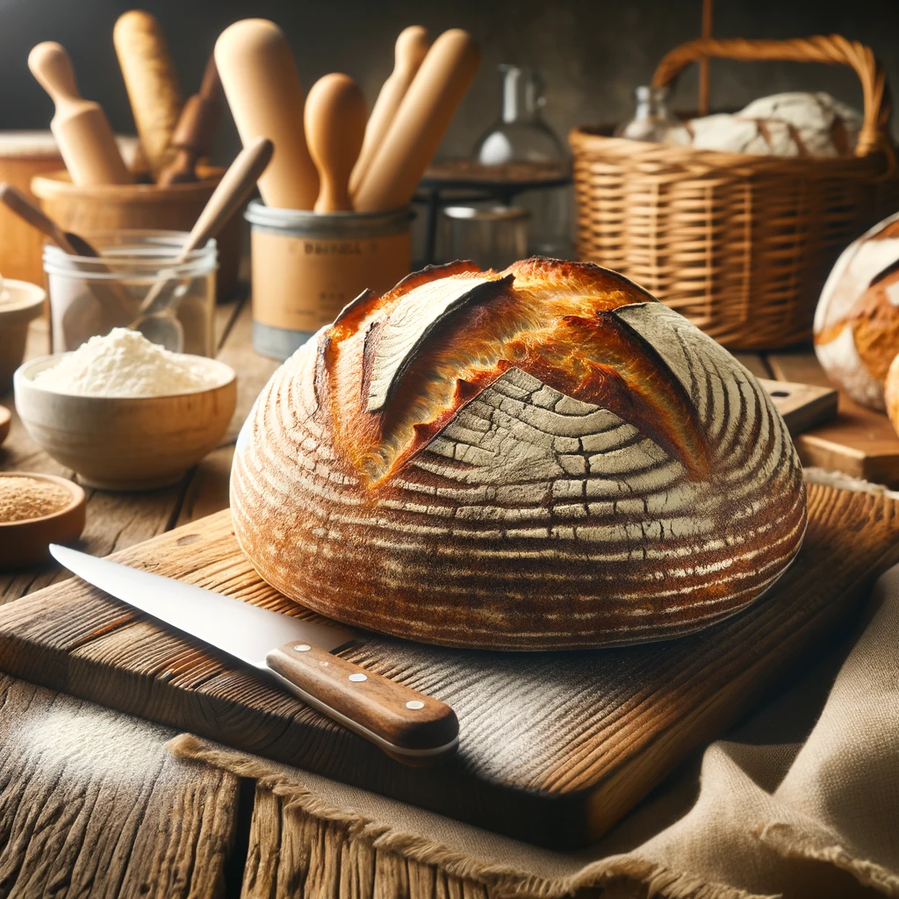

Baking With Denzel
I discoverd my love for baking at the tender age of 10, when I baked my first batch of cookies with my grandmother. The joy of creating someting delocious from scratch enthralled me. Over the years, I honed my skills by experimenting with various recipies and even creating some of my own. My dream is to share the joy of baking with others and inspire them to create their own baking wonders.
Classic Carrot Cake
An homage to tradition and familial bonds, enriched with the natural sweetness of carrots and a crunch of walnuts, it holds a special place in my heart as it was my late grandfather favorite. Every year on my grandfather's birthday, I would bake this cake to honor his memory and the bond we shared over the love of baking.
Ingredients:
2 cups all purpouse flour
2 cups granulated sugar
1 teaspoon baking soda
2 teaspoons cinnamon
1/2 teaspoon salt
1 cup vegtable oil
4 large eggs
 2 cups grated carrots
1 cup crushed pineapples
1/2 cup chopped walnuts
2 cups grated carrots
1 cup crushed pineapples
1/2 cup chopped walnuts
Instructions:
- Preheat the oven to 350
- Mix together the flour, baking soda, cinnanmon, and salt into a large bowl

- Then stir in the oil and eggs until smooth
- Fold in the carrots, pineapple, and walnuts, then pour the batter into a greased baking pan and bake for 30-35 minutes
- Make sure you allow the cake to cool before frosting with cream cheese frosting
Sourdough Bread

A community favorite, boasting a crusty exterior and a soft, airy interior, embodying the classic sourdough charm.
Ingredients:
1 cup of sourdough starter
1 1/2 cups warm water
4 cups bread flour
1 1/2 teaspoons salt
Instructions:
- Mix the starter, water and 3 cups of flour in a large bowl, this should create a sticky dough

- Next add salt, and remaining flour, 1 tablespoon at a time until they are fully incorporated.
- Then, knead the dough on a floured surface for about 15 minutes.
- Once the kneading is done, place the dough in a lightly greased bowl, cover it, and let it rise for about 5 hours
- Shape the dough into a loaf and let it rest for 30 minutes.
- When you are ready to bake, preheat your oven to 450 degrees F and bake for 30 minutes until its golden brown
Almond Croissants

A delicate pastry filled with the sweet nutty goodness of almond paste, dusted with powdered sugar, and baked to a golden perfection
Ingredients:
1 sheet of puff pastry
1/2 cup of almond paste
1/4 cup of powdered sugar
1 egg (for egg wash)
Instructions:

- Preheat oven to 375 degrees F
- Roll out puff pastry and cut it into triangles
- Spread a thin layer of almond paste on each triangle
- Then roll each triangle from base to tip and curve into a cresent shape.

- Brush with egg wash, and sprinkle powdered sugar and bake for 15-20 minutes until its golden brown
Baking Tips
Measuring ingredients accurately is very improtant
Its also very important to allow butter and eggs to reach room tempature before baking
Rotaing the baking tray halfway through the baking time will help get an even bake
Quotes from Happy Customers!
Tina said, "Denzel's sourdough is the best in town. It has the perfect crust and is always so fresh!"
Jordan said, "The almond croissants are a little bite of heaven. I can't get enough"
How To Contact Me!
Email:
Denzelstreats@gmail.com
LinkedIn:
linkedin.com/in/denzel-baker
Instagram Profile:
instagram.com/denzelstreats
Facebook Page
facebook.com/DenzelsBakery